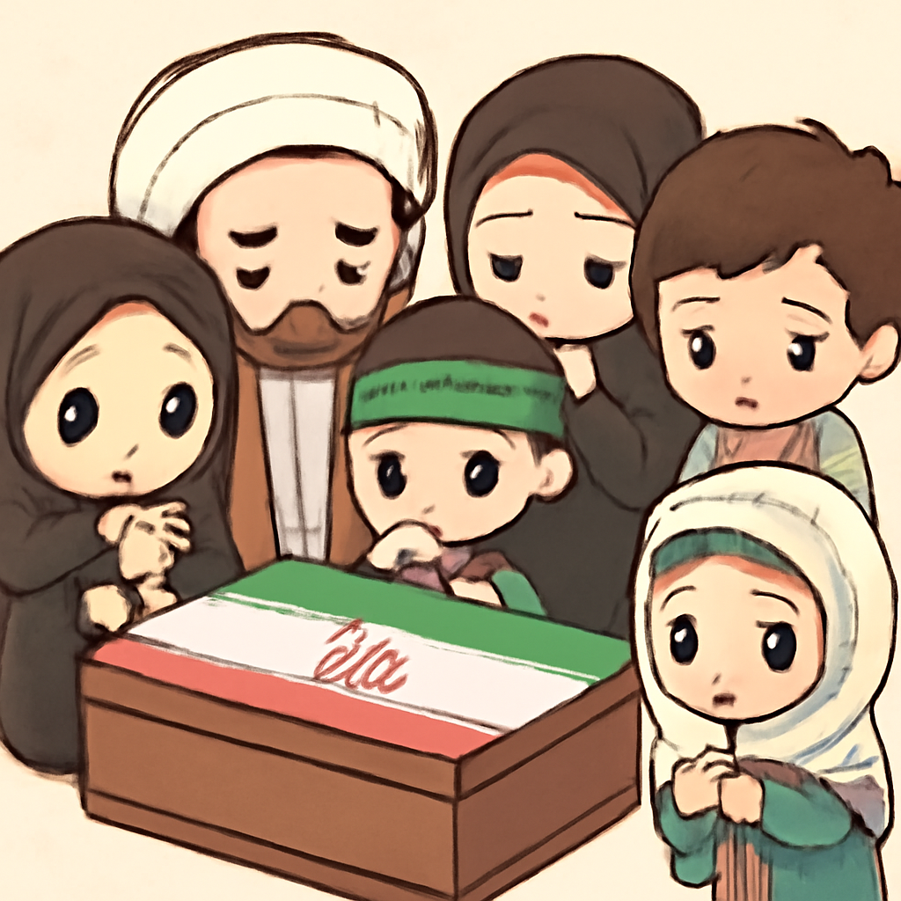

其一 · 烏克蘭基輔 · 烏克蘭攻擊俄國油港
烏克蘭總統表示此行動針對俄國戰爭資金
在烏克蘭基輔，總統澤倫斯基宣布，烏克蘭已攻擊了俄國聖彼得堡的一個重要油港，這個港口對於俄國的戰爭資金至關重要。這次行動不僅展示了烏克蘭的軍事能力，也可能改變未來的戰局。看來，俄國的油箱又要空了！
🔗 原始新聞 ↗
2026-07-05 · 以古觀今，以笑抗愁
烏克蘭總統表示此行動針對俄國戰爭資金
在烏克蘭基輔，總統澤倫斯基宣布，烏克蘭已攻擊了俄國聖彼得堡的一個重要油港，這個港口對於俄國的戰爭資金至關重要。這次行動不僅展示了烏克蘭的軍事能力，也可能改變未來的戰局。看來，俄國的油箱又要空了！
🔗 原始新聞 ↗
德黑蘭舉行哈梅內伊的國葬，民眾集聚悼念

在伊朗德黑蘭，哈梅內伊的葬禮吸引了大量民眾聚集，這位領導人的去世引發了國內外的關注。葬禮不僅是對他個人的懷念，也顯示了當前伊朗政治的分歧與不穩定，未來局勢可能更加複雜。看來，這個葬禮不只是告別，還是政治的大舞台。
🔗 原始新聞 ↗
教宗在蘭佩杜薩紀念遇難移民，呼籲更多援助
在義大利的蘭佩杜薩，教宗訪問了一個紀念遇難移民的墓地，並呼籲歐洲各國應該加強對移民的支持。這個小島再次成為移民危機的焦點，教宗的話語提醒我們，面對人道主義的挑戰，我們不能袖手旁觀。希望別人能聽見這位教宗的呼籲，否則連他的白袍都要被海水弄濕了！
🔗 原始新聞 ↗
普京在戰場上誓言要擴大俄國的佔領
在俄國莫斯科，普京訪問戰場，公開表示要奪取更多烏克蘭的土地，並稱烏克蘭的勝利只是「虛構的成就」。這不僅是對烏克蘭的挑釁，也讓人擔心未來的衝突升級。普京的發言讓人不禁懷疑，他是不是在演一齣政治劇？
🔗 原始新聞 ↗
中國政府強調新法旨在保護少數民族
在中國北京，政府強調新通過的「民族團結法」是為了保護少數民族的權益，儘管外界對此表達了批評。這項法律引發了國際社會的關注，未來可能影響中國內部的民族關係。看來，這場法律的辯論還會繼續，大家得繃緊神經了。
🔗 原始新聞 ↗